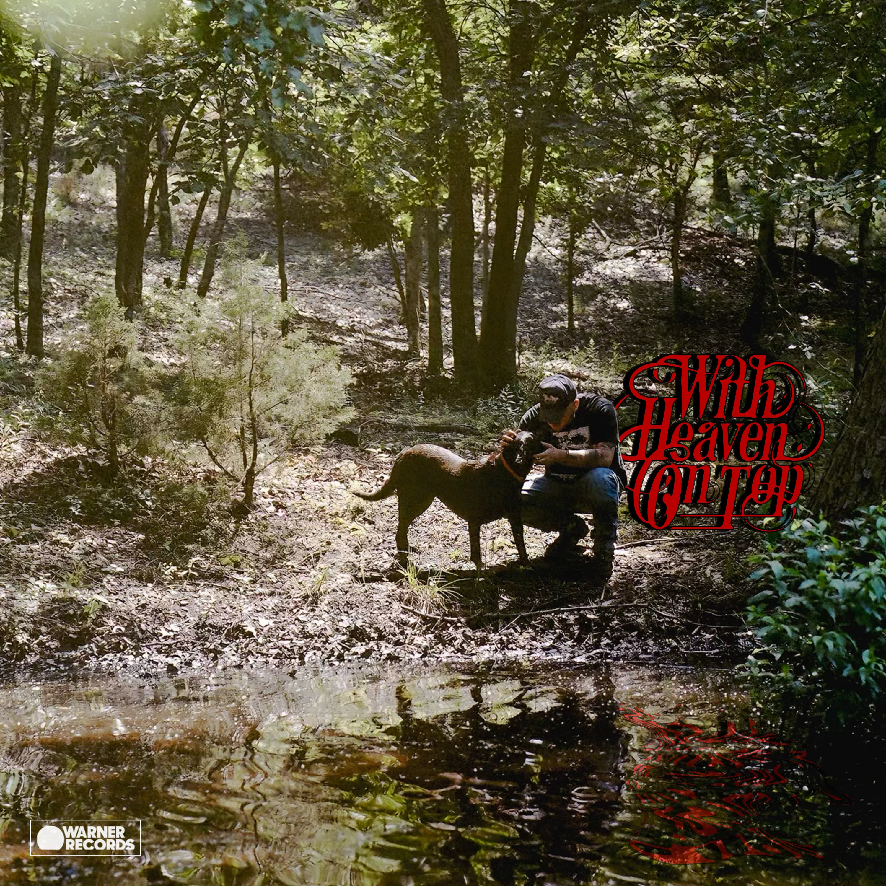

by Zach Bryan
This is up there for the album I've reviewed with both the highest highs and lowest lows. There is such diversity with the songs on this album ranging from reading poetry to almost acoustic tracks to rock/folk jams. None of it was horrendous, but there was noticeable differences in the song tiers. This reflective project of Zach Bryan's personal journey through fame, popularity, and travel is about his progress towards spiritual peace and comfort. I can understand the desire for calmness considering the rate at which he is cranking out these albums, and touring concerts in recent years, none of which have not had his whole heart invested into them. I am a big fan of this album, but it is not his peak based on what he has produced in the past. Is there better yet to come? We will need to find out. My personal favorite tracks were Plastic Cigarette, Aeroplane, and Say Why. Album was reviewed on April 21st, 2026.